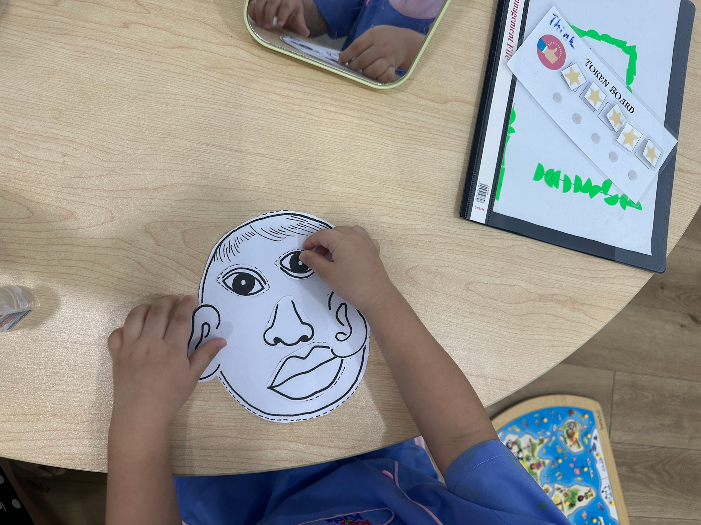
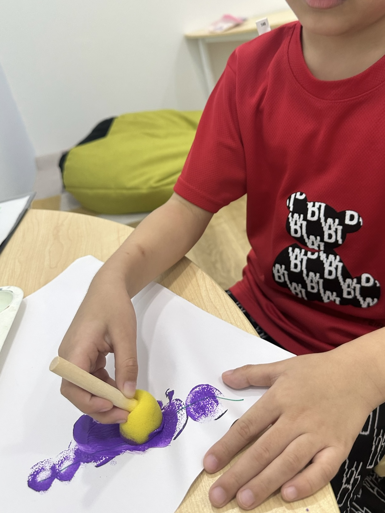
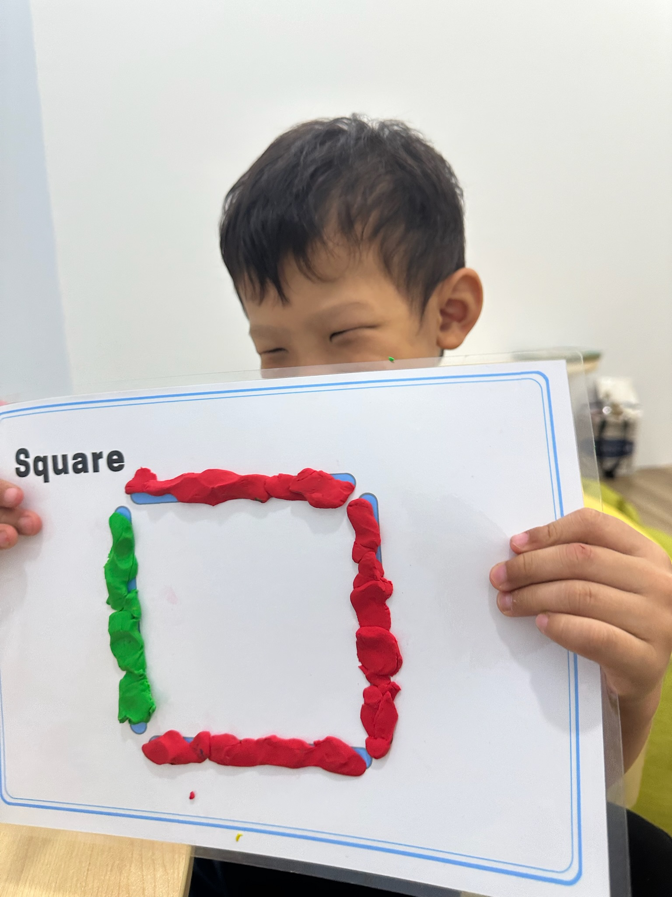

神经多样性的孩子——ADHD（注意力不足过动症）、自闭症
困难很具体，需要有针对性的支持，而不是一般课程的孩子
还没准备好进入小组，或者觉得小组太压迫的孩子
已有诊断，但家里只有一个标签、却没有具体计划的孩子
试过小组，但需要先换一种方式的孩子
在学校勉强应付得来，但已经很吃力的孩子
每份计划都不一样，因为它是根据您的孩子来制定的。我们主要着手的方面：
在情绪失控之前察觉到它，学会平复下来，也学会接受事情不如意。
记住指示、做计划、开始行动、整理、完成任务，以及自己发现错误。
说出自己的需要、开口求助，用解释代替发脾气。
看懂当下的情境，理解别人在想什么，也懂得修补自己弄坏的关系。
以及背后的原因。我们处理的是根源，而不是只管表面。
面对自认为做不好的任务时怎么开始，卡住的时候又该怎么办。



从评估开始，而不是凭感觉如果孩子已经在我们这里做过学习档案，我们就从那里开始。如果还没有，我们通常会先建议做一份——一个学期有的放矢的辅导，胜过两个学期的摸索。如果您在别处做过评估，也请带来，我们通常可以在那个基础上继续。
与您一起订立目标三四个目标，白纸黑字写下来，具体到您能看出有没有达成。例如“不用提醒，也能主动向大人求助”，而不是“自信心提升了”。
课堂在孩子眼里，这就是游戏、搭建、画画和聊天。这是刻意的安排——觉得自己被考核的孩子，表现起来就会像被考核的孩子。每周一次，每次 45–60 分钟
有意义的检讨每 4–6 堂课，我们会和您做一次简短的检讨：看到了什么、哪些有进步、哪些还没有。如果某个方法行不通，我们会直说，并马上调整。您不该上了半年课，还不确定到底有没有帮助。
征得您同意后，与学校合作最有帮助的对话，往往是和班主任的那一场。
我们的目标是“结束”这不是要一直上下去的。当目标达成时，我们会告诉您——而接下来合适的一步，往往是周末小组，让孩子和其他小朋友一起练习这些技能，而不是只和大人练习。
RM 200 / 堂
每周一次，每次 45–60 分钟。在您作出任何决定之前，一切都会先向您说明确认。
计划如果是以评估为基础来制定，效果最好，所以我们通常从评估开始。如果您在别处做过评估，请带来，我们多半可以在那个基础上继续。无论哪种情况，我们都会在电话里和您详细谈谈，一起找出合适的起点。
不是。补习老师教的是内容——数学、英文、课程大纲。我们处理的是内容底下的能力：专注力、记忆、规划、自我调节和自信。有些孩子两者都需要，如果我们认为您的孩子也是这样，会如实告诉您。
不是。我们不是心理健康服务机构。如果您的孩子需要，我们会协助您找到合适的服务。
一般是每周一次，持续三到六个月——但真的要看孩子。每个孩子的起点和节奏都不同，我们宁可给您一个诚实的范围，也不愿说一个站不住脚的数字。
由一位教育治疗师负责，并由我们的教育心理学家督导。您的孩子每堂课都会见到同一位老师，而且整个过程都有人把关，不会只凭一个人的判断。
告诉我们孩子的年龄、您留意到的情况，以及您希望得到什么帮助。我们会坦诚地告诉您哪个课程适合——即使答案是都不需要。
自信，能干，独立学习。